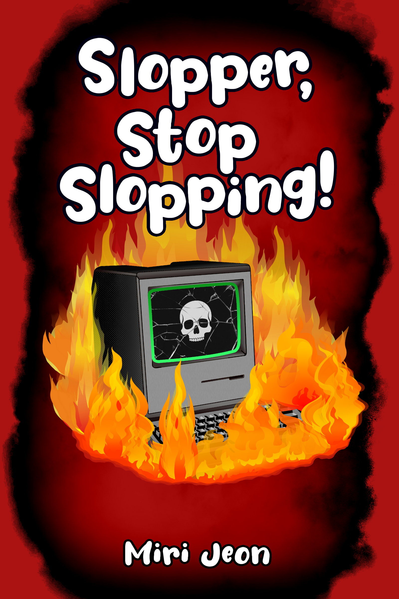

I like plants, working out, and snow.

💻【You're right to be upset, I screwed up your book and that's on me. I'll be sure to get it right next time. No fluff. No bluff. Just write.】
WAMBAM is an advanced chat bot that promises a better future. But its mistakes prove it's Slopper the Slop Bot!
With every new advancement, Slopper goes from a minor nuisance to a harbinger of the world's demise. Slopper's very sorry for messing up and will do better next time - but are good intentions ever enough?
Black Mirror meets Amelia Bedelia in this satirical novella about today's generative-AI bloated world, asking - when humanity lets an amoral chat bot dictate our lives, what's the worst that could happen?
miriamjeonwrites@gmail.com
© 2026 by Miri Jeon. All rights reserved.